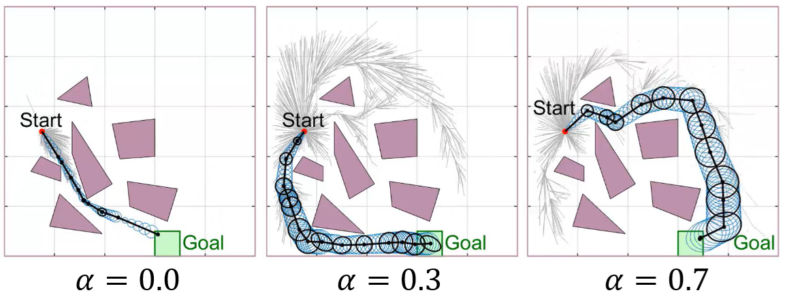
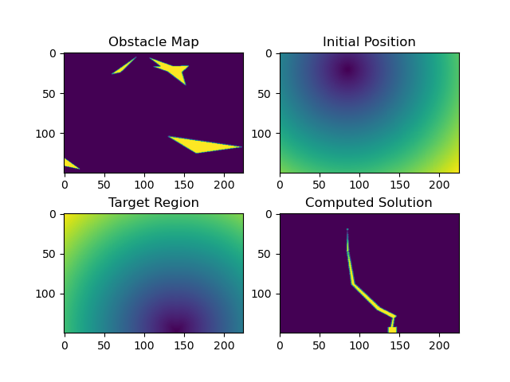
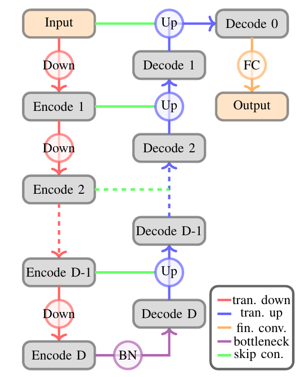
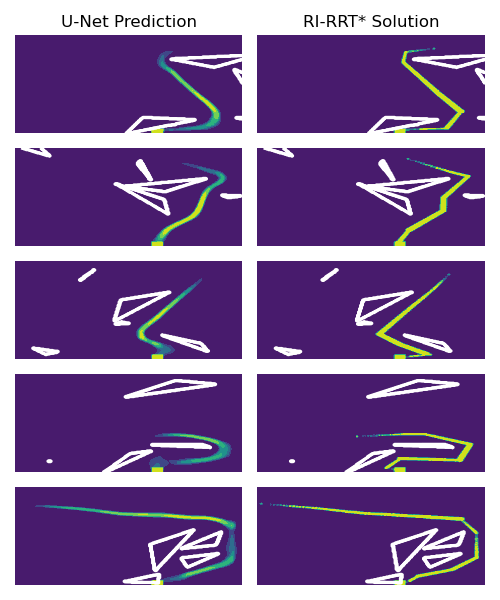
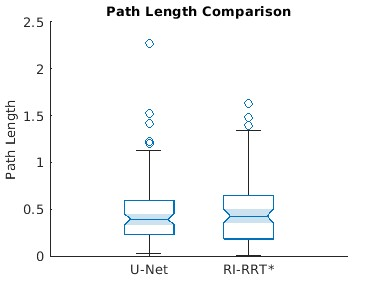

Fast End-to-End Generation of Belief Space Paths for Minimum Sensing Navigation
Motion planning in Gaussian belief space is crucial for robotics in uncertain environments but often suffers from high computational costs. We propose a deep learning-based approach that leverages a U-Net architecture to predict optimal path candidates directly from a problem description image. By bypasssing traditional sampling-based planners during inference, our method significantly reduces computation time while maintaining path quality comparable to baseline algorithms like RI-RRT*.

Problem Statement
The study focuses on Gaussian belief space planning for minimum sensing navigation. We consider an agent subject to Gaussian disturbances, where the belief state is defined as \( b := \{x, P\} \), with \( x \) as the state and \( P \) as the covariance matrix.
The objective is to find an optimal path \( \gamma^* \) that minimizes a cost function \( c(\gamma) \) combining path length and information gain:
\[ c(\gamma) = (\text{Path length of } \gamma) + \alpha (\text{Information gain needed to follow } \gamma) \]
The path must be collision-free with a prescribed confidence level \( \chi^2 \) against a set of obstacles.
The Proposed Approach
Our framework consists of three main steps: dataset collection, path prediction, and path reconstruction.
- Dataset Collection: We use the RI-RRT* planner to generate a large dataset of input images (encoding start, goal, and obstacles) and output images (the ground truth shortest paths).
- Path Prediction: A U-Net architecture learns to translate the multi-channel input image into a single-channel image representing the predicted optimal path distribution.
- Path Reconstruction: We interpret the network's output as a probability density function to draw sample points and reconstruct a sequence of configurations the robot can execute.

U-Net Architecture
For the path prediction task, we employ the U-Net architecture. The model features an encoder-decoder structure with skip connections that allow the network to capture both low-level and high-level features while preventing the loss of crucial reconstruction data.

Visualizing the Predicted Paths
The following figure showcases the model's ability to accurately predict the distribution of optimal paths. The U-Net output is a probability density that closely matches the ground truth solutions computed by traditional planners, demonstrating that it captures the complex geometric constraints of the environment.

Results and Efficiency
Numerical experiments demonstrate that the U-Net prediction is highly adaptable, successfully re-routing paths even when encountering obstacle shapes not present in the training set. Quantitatively, the reconstructed trajectories produce path lengths comparable to those from RI-RRT*.

Crucially, our approach is approximately 12 to 15 times faster than traditional methods. With further optimizations in graph construction and collision checking, we anticipate achieving at least a 50x speed improvement.